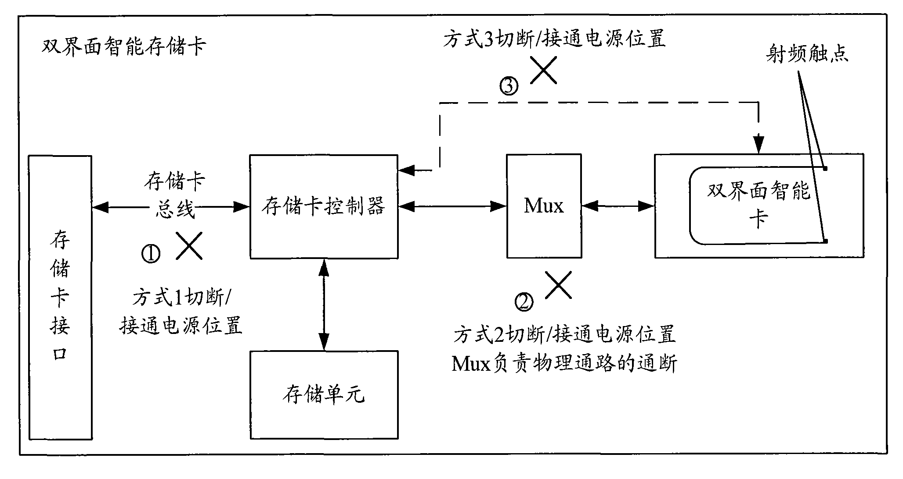

发明名称--双界面智能存储卡、读写系统及其工作方式转换方法
| 申请号 | CN200810116228.1 | 申请日 | 2008.07.07 | ||
| 公开（公告）号 | CN101315660A | 公开（公告）日 | 2008.12.03 | ||
| IPC分类号 | G06K7/00; G06K19/07; G06K7/08 | 申请（专利权）人 | 普天信息技术研究院有限公司; | ||
| 发明人 | 张海英;姜涌;曹会扬;王小军;张旭;廖泉;董琳; | 优先权号 |
摘要:
本发明公开了一种双界面智能存储卡的工作方式转换方法，该方法包括：当判断出需要将双界面智能存储卡的工作方式由接触式转换为非接触式时，切断所述双界面智能存储卡在接触式工作方式下的电源；当判断出需要将双界面智能存储卡的工作方式由非接触式转换为接触式时，接通所述双界面智能存储卡在接触式工作方式下的电源。本发明还公开一种双界面智能存储卡及双界面智能存储卡读写系统。应用本发明能够在不进行插/拔的情况下，实现双界面智能存储卡工作方式的转换。
摘要附图:
